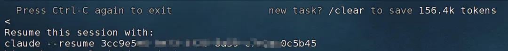
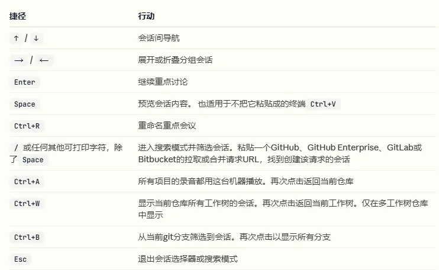

Claude code会话中断是可以重启的哦
原文：https://mp.weixin.qq.com/s?__biz=MzAwMzIzOTk5OQ==&mid=2247538520&idx=2&sn=76e8ea7695a438c720723249dcefa0d1&chksm=9b3c2e08ac4ba71e99babd1cda2432b9c5e5ecdd2bdee396c8c4d5639bb1e3d9038074857ac5#rd 合集：AI时代，不用就会被淘汰
由于要执行代码并不断交互，Claude code的实际运行时间一般会很长，这就不可避免地会遇到掉线地问题。好在Claude code是有进程记忆功能的。即使掉线或程序终止也不用担心，claude code有记忆系统(甚至可以在不同的会话中记录你的使用习惯，也可以在CLAUDE.md中输入一些全局的上下文)，可以直接输入claude --continue就可以恢复最近一次的claude会话。

如果是你手动Ctrl+C终止了Claude，那么Claude会返回一个类似于上面截图的编号，那么你以下面的形式，就可以通过这个编号来重启claude对话：*
claude --resume 编号
当然，程序可以自己跑的，不用盯着，你也可以通过利用Tmux高效管理终端会话来防止掉线。 Claude code还有以下快捷键，感兴趣的同学可以试一试：


如何联系我们

 留一个领取资料、开箱即用的单细胞分析镜像的微信号[Biomamba_zhushou]，方便各位随时交流。同时我们也构建了交流群矩阵，欢迎大家入群讨论。
大家可以阅读完这几篇之后添加给生信入门初学者的小贴士
没有检索，就没有发言权
留一个领取资料、开箱即用的单细胞分析镜像的微信号[Biomamba_zhushou]，方便各位随时交流。同时我们也构建了交流群矩阵，欢迎大家入群讨论。
大家可以阅读完这几篇之后添加给生信入门初学者的小贴士
没有检索，就没有发言权
已有生信基地联系方式的同学无需重复添加

 您点的每个赞和在看，我都认真当成了喜欢
您点的每个赞和在看，我都认真当成了喜欢